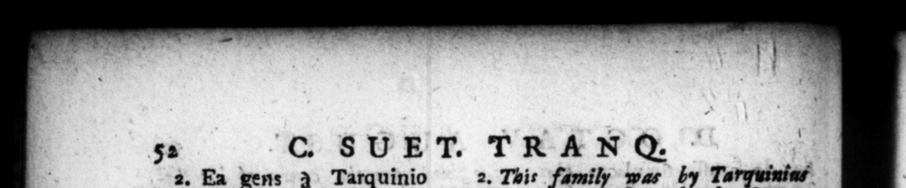

52 2. Ea gens à Tarquinio Priſco rege, inter Romanas gentes allecta, in ſenatum mox à Ser. Tullio in patriclas tranſducta, fx nn mag tempore ad plebemſe contulit, ac rurſus magno intervallo per D. Julium in patriciatum rediit. Primus ex hac magiſtratum populi ſuſtragio cepit C Rufus. Is quæſtorius Cn. & C. procreavit: a quibns duplex Ozavioram familia defluxir, condi tione diverſa, Siquidem Cn. & deinc&ps ah eo reliqui omnes runcti ſunc honoribus ſummis. At Cajus ejusque poſteri, ſeu fortuna, ſeu voluntate, in <queſtri ordine conſtĩtere, uſque ad Auguſti patrem. Proavus Auguſti ſecundo unico Hello, ſtipendia in Sicilia triImnys militum fecit, Emilio Pappo imperatore. Avus mu1:cipalibus magiſteriis conrents, abundante patrimanio rranquilliſſime ſenuit. Sed lic alii. Ipſe Auꝑuſtus nihil amplius quam equeſtri familia ortum fe ſcribit, vetere ac locnplere, & in qua primus ſenator pater ſuus fierit, M. Antonius libertinum ei proavum exprobrat reſtionem, e pago Thurino: avum argen tarium. Nec quidquam ultra de puernis Auguſti majoribus reperi. | C. SUVET. TRAN®Q. © Julius | 2. This family was by Tarquiniar Prifcus, Pe — everal other Roman families, taken imo the ſenate, and ſoon after advanced by Ser uius Talliu am the Patriciens, but in time e-. turn d again to the commons, and a long time after that, was again raiſed 4 by 1 2 em nity. The firſt perſon of the fanny a4 lad elne. of the people 1 any poſt in the government, was G. Rufus. He came to the quefiorſbip, and had two ſons Cneius and Caius. From whom the two branches of that family are deſcended, very different in their! circumſtances. For Cnæus and his deſcendent in an uni tea jucce bwe all the great offices of ſtate. But Caiu: and his poſterity, whether through chance or choice, contnued in the e ſirian order, till the father of Auguſtus, His great granaf ather ſerved in quality of a tribune in the ſecond Carthaginian war in Sicily, under the command of Amilins Pappus. His grandfather contented himſelf with bearing the publick offices of his borough, and grew old in ihe quiet enjoyment of 4 very plentiful eftate. But this account is. given by others, A; for Auguſfins himſelf, he ſays no more, but that he was defetnded's an equeſtrian family, that was both antient and rich, and in which his father was the firfl that was a ſenator, Mark Anthowy upbr aidingiy tells him, that his great grand father was a freed-man of the territory of Thurii, and a rope maler, and his: grandfather a banker. A this is all I bade any where met with, en erning the anceflirs of Auguſtus by th: father's ſide. 2. C. OKavius pater I principio mtatir, & re & wxſtimatione magna fuit: ut equdem mirer, hunc quoque a nonnull;s argentarium, atnne etiam inter diviſores operaſque campeſtret, proditum. Amplis enim inutritus onus honores & adeptus eſt eile, & egregie adminiſtravit, Ex pretira Macedoniam ftortiine, ſugitivos, refiduam Spartaci & Citilinæ manum, Thyinum agrum renentes, in itincre Celevit, neve i) Hrs at his fiſt ſetting out in the world, 4 perſon of a very conſiderable eſtate and figure; that 1 wonder indeed, ſem? ſhould pretind to ſay, that he was 4 banker too, and one that was en play d to diſtribute money amongſt 1he cii i cen for The candidates at elections, and uon oth:r the like occaſions, in the field of Mars. For being bred up in all the affluence of a great eftate, he aid with eaſ' attain o very cor ſiderable prſtt, and brhawved os well i them. Afcer his prætorſbip, he get by lot the prev.ncc of Mecrauna, ath:r C. octauiut was, even r OETS.- 23 ATT ETLLS TL ONS T 1
